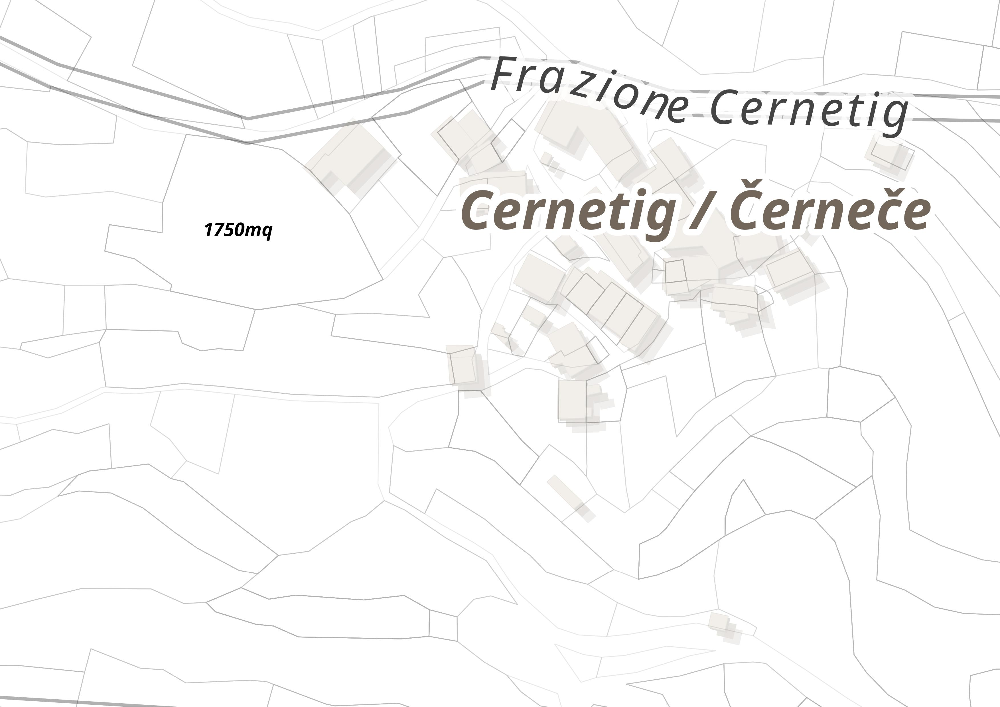
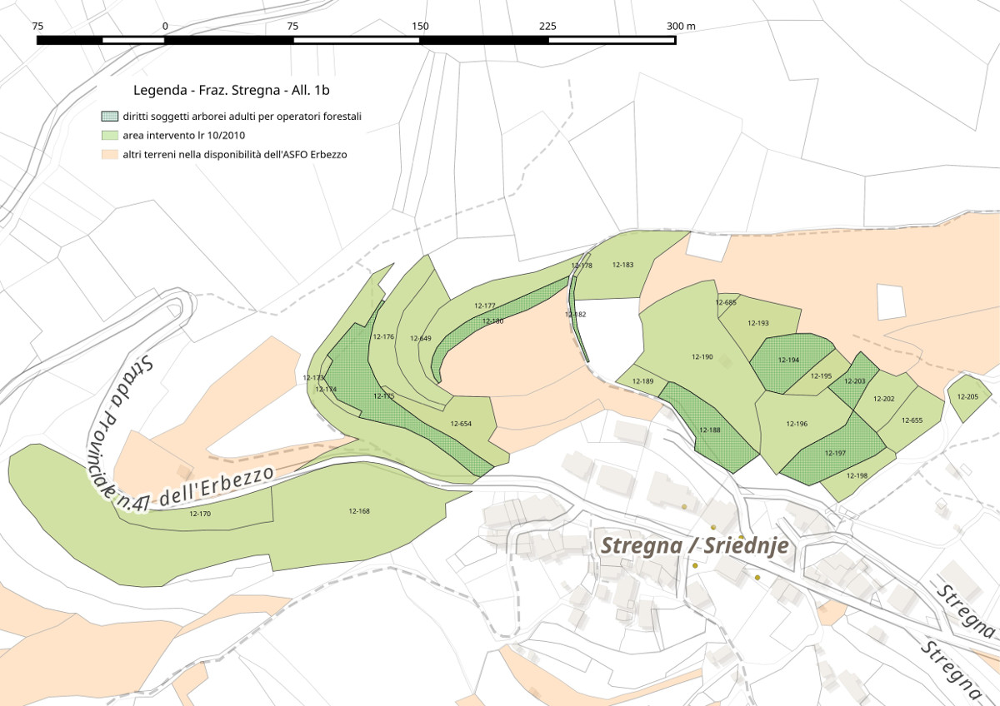
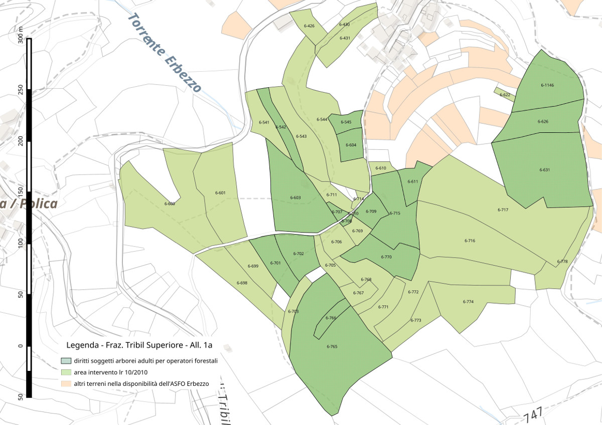

L'ASFO Erbezzo di Stregna: dal recupero dei terreni incolti alla valorizzazione del paesaggio terrazzato
dott. Luca Postregna, sindaco di Stregna
www.asfoerbezzo.eu - info@asfoerbezzo.eu
Cantiere Friuli - Officina montagna
@Zuglio(FVG) - 14 ottobre 2020
A chi si rivolge questa presentazione?

- ai cittadini che vogliono migliorare il paesaggio
- alle aziende agricole e forestali
- agli enti locali
Di cosa parleremo?

- le Valli del Natisone
- le norme regionali FVG che affrontano l'abbandono
- associazione fondiaria: cos'è, cosa fa e cosa farà?
- i progetti di valorizzazione del paesaggio
Il Piano Paesaggistico Regionale

Il paesaggio designa una determinata parte di territorio, così come è percepita dalle popolazioni, il cui carattere deriva dall'azione di fattori naturali e/o umani e dalle loro interrelazioni
Carta Europea del Paesaggio, 2000
Il PPR è frutto della collaborazione tra:
- Regione FVG (Servizio pianificazione paesaggistica, territoriale e strategica)
- UniUD (collaborazione tra molti dipartimenti: geografia, economia, agricoltura, ... )
- MIBAC
Il PPR è una legge regionale sovraordinata alla pianificazione territoriale degli enti locali (UTI, comuni, ecc.), si divide in due parti:
- Statutaria (definizioni, es. morfotipi, ecotopi, ...)
- Strategica (reti: ecologica, beni culturali, mobilità lenta)
In fase di scrittura del PPR è stato promosso un percorso partecipativo che ha coinvolto:
- Regione FVG
- UniUD
- Comuni
- Scuole
- Associazioni
output: elementi di valore e di degrado
SERVE UN BISOGNO CONDIVISO
Stregna ha coordinato il processo partecipativo dei comuni delle Valli del Natisone

OUTPUT del PPR:
- schede ambito di paesaggio
- indirizzi per l'aggiornamento degli strumenti di pianificazione territoriale (piano regolatore, ecc.)
- richiami al PPR nei bandi di finanziamento del Programma di Sviluppo Rurale
- progetti sperimentali di paesaggio
Le Valli del Natisone
- 9 comuni
- superficie: 240kmq
- altezza: 90m - 1641m s.l.m.
- abitanti: ~24000 nel 1920, ~8000 nel 2015
distribuzione dei centri abitati
| % | alt. (m) |
|---|---|
| 40 | -300 |
| 20 | 300-500 |
| 25 | 500-700 |
| 10 | +700 |
- 0.6 centri abitati per Kmq
la superficie agricola

- agraria: 10-15%
- forestale: 70-80%
Qual'è il problema paesaggistico nelle Valli del Natisone?
ABBANDONO
catasto nel comune di Stregna
- 1904 ettari di superficie
- 0.24 ettari è la media sup. per particella
- 99% è proprietà privata
studio (DISAFA e Comp. San Paolo, Torino, 2016)
- superficie: 36ha
- n. particelle: 330
- superficie media: 0.11ha
proprietari:
- 225 totale
- 19% residenti
- 81% non residenti
particelle:
- 77% con almeno 1 proprietario non residente
- 52% senza proprietari residenti
le iniziative sul frazionamento fondiario, multi-proprietà e abbandono
-
LR 8/1992: Interventi per lo sviluppo dell' agricoltura montana (finaziamento accorpamenti)
-
LR 16/2006: razionalizzazione fondiaria + PIPA
-
LR 10/2010: recupero dei terreni incolti ed abbandonati
-
LR 9/2007 (2017): ASSOCIAZIONI FONDIARIE

LR 16/2006
razionalizzazione fondiaria + PIPA
Intervenire sul titolo di proprietà è un limite o una opportunità?
LR 10/2010
Interventi di promozione per la cura e conservazione finalizzata al risanamento e al recupero dei terreni incolti e/o abbandonati nei territori montani.
tempi di attuazione della LR 10/2010
- 1-2 anni: intervento di recupero
- + 5 annate agrarie: mantenimento a prato
la concessione in affido

- volontaria, adesione dell'avente titolo
- amministrativa, imposizione del comune
gli indirizzi della giunta di Stregna n. 67/2019
regoliamo la concessione di contributi ai soggetti che si assumono l'onere dell'intervento di recupero ed il mantenimento a prato pascolo
Art. 1 - finalità

- prevenzione incendi
- prevenzione animali nocivi (zecche, ecc.)
- stimolare imprenditoria agricola
- recupero del paesaggio e della biodiversità
Art. 2 - definizioni
- area d'intervento
- soggetto/i operatore/i
- soggetto/i manutentore/i
Art. 3 - Indicazioni operative
- rimozione ceppaie per pendenze minori del 20%
- altezza max 50cm, rapporto diametro/altezza 2:1
- soggetti arborei adulti o di pregio, max 20/ettaro
- salvaguardia piante monumentali e da frutto
- attività devono concludersi tra giugno e settembre
Art. 4 - Proposta area intervento e modalità richiesta contributo
- il tecnico forestale è individuato dal soggetto operatore
- progetto (cartografia + tabella descrittiva: superficie, pendenza, stato di abbandono, titolo)
- eventuale accordo tra più soggetti operatori e/o manutentori
Art. 5 - Accettazione aree d'intervento
- approvazione in giunta del progetto
- il comune richiede ed ottine il contributo regionale
- determina di impegno di spesa nei confronti dei beneficiari
Art. 6 - Conclusione delle operazioni d'intervento
- entro il 31/9, chiusura interventi
- eventuale rinuncia su porzioni di superfici
- verifiche a campione del tecnico comunale
- determina di liquidazione nei confronti dei beneficiari
- entro il 10/10, il comune chiude gli interventi nei confronti della Regione FVG
Art. 7 - Contributi per le operazioni di mantenimento a prato-pascolo
- il comune chiede alla Regione FVG contributo per mantenimento ed impegna ai beneficiari
- entro il 30/9, il soggetto manutentore comunica il termine delle operazioni al comune
- determina di liquidazione ai soggetti beneficiari
- verifiche a campione fa il corpo forestale
LR 10/2010 - Contributi terreni incolti:
Per l'intervento:
- euro da 3500 a 8000 a ettaro
- euro 150/ettaro per spese tecniche
Per il mantenimento:
- euro 500/ettaro/anno per 5 anni, +PSR, + ...
Art. 9 - Impegni del soggetto operatore e del soggetto manutentore
- ripristino viabilità danneggiata
- salvaguardia prati stabili
Art. 10 - Subentro di soggetto operatore e soggetto manutentore
- Si stabilisce che in ordine agli impegni assunti dal soggetto operatore e dal soggetto manutentore, è possibile il subentro nell’impegno nei confronti del comune da parte di soggetti terzi
Art. 11 - Accordi particolari tra comuni e beneficiari
- per operazioni di controllo
- per ulteriori operazioni (muretti a secco, viabilità agricola, sentieri, ...)
Art. 12 - Modifiche agli indirizzi sono retroattive
Art. 13 - Allegati
- bozza domanda di contributo
- bozza termine operazioni d'intervento e richiesta mantenimento
- bozza comunicazione termine annuale di mantenimento
Leggi regionali sulle ASFO:
- Piemonte: LR 21/2016
- FVG: LR 9/2007 ART. 86BIS
Dov'è nata l'associazione fondiaria?
- Francia 1976, association fonciere pastoraux
- Italia 2012, Carnino (CN), ...
Cos'è l'associazione fondiaria?
- associazione di volontariato senza fini di lucro
- acquisisce la gestione dei fondi agricoli dai soci
- raccoglie la delega dei soci a dare in affitto i terreni
- non usucapisce la proprietà per statuto
l'associazione fondiaria a Stregna?
2012-2013
- movimento freeplanine - Poldini, Iussig, ...
- approfondimenti lr 10/2010
2015
- primavera: conferenza + costituzione
- estate: problemi lr 10/2010 + moduli di adesione
- autunno: ammissione nuovi soci...
A che punto siamo nel 2020?
- 75 soci
- 423 particelle
- 67.9 ettari
- 6 contratti d'affitto nel 2020 (in aggior.)
ASFO Erbezzo a Stregna
ASFO Erbezzo ad Oblizza

ASFO Erbezzo a Tribil Superiore

Quali sono i problemi riscontrati?
Difficoltà burocratiche iniziali
- interpretazione lr 10/2010
- stesura statuto e moduli adesione
- stesura contratto d'affitto
Difficoltà tecniche
- analisi dati catastali
Collaborazioni:
Contattare i titolari dei fondi
- Ottimo riscontro dagli aventi titolo:
es. nel progetto (2015) hanno aderito proprietari equivalenti a 58/60 di particelle
Individuazione del soggetto operatore che si assume sia l'onere dell'intervento che del mantenimento è stato un grande problema
- Alla fine ci siamo rivolti ad operatori forestali professionali, anche se non del territorio
- Difficoltà nell'individuare operatori per attuare interventi su ampie superifici
Gestione dei diritti della legna
- ciascun socio si esprime in fase di adesione
- valutazione arborea del tecnico forestale su ogni singola particella
- l'operatore forestale che ha in affitto il terreno acquista direttamente dal socio a prezzo di mercato
superifici recupero dei terreni incolti (ha):
| 2018 | 2019 | ||
|---|---|---|---|
| asfo erbezzo | 1.4 | 11.1 | |
| altri privati | 10.2 | 3.5 | |
| totale | 11.6 | 14.6 | 26.2 |
Ottobre 2020: abbiamo concluso tutte le attività di manutenzione previste
Quali sono le prospettive?
- potenziare l'attività pascoliva
- migliorare la qualità ecologica dei terreni recuperati
- piani di gestione aree recuperate (c'è la lr 9/2007...)
- ampliare recupero dei terreni incolti
- gestione dei prati a sfalcio
- gestione selvicolturale + PEFC
- viabilità forestale (PSR + LR 9/2017 art. 35)
- progetti mirati (castanicoltura tradizionale in chiave turistica, recupero paesaggio terrazzato, ...)
aggiornamenti legislativi
- intendiamo valorizzare la nascita e l'aggregazione delle associazioni fondiarie e promuovere una norma nazionale
Testo Unico Forestale 2018
- Art.2 c. 1c) Finalità - promuovere e tutelare ... l'economia montana ... attraverso ... il recupero produttivo delle proprieta' fondiarie frammentate e dei terreni abbandonati, sostenendo lo sviluppo di forme di gestione associata delle proprieta' forestali pubbliche e private;
- Art. 12) Forme di sostituzione della gestione e di conferimento delle superfici forestali ...
Gli itinerari della rete escursionistica
PPR: rete della mobilità lenta


Il Programma di Sviluppo Rurale
recepisce i contenuti e le priorità del PPR
- BioColConnect: mis. 16.5, approcci agro-climatico-ambientali (interventi su terrazzamenti, stavoli, viabilità forestale, ecc.)
- Rete escursionistica dell'alta valle Erbezzo: mis. 19.2, sostegno allo sviluppo locale LEADER / GAL (interventi su fontane, sentieri, ecc. )

Biotopo Naturale (DPGR n. 021/Pres. 20.02.2019)
"Prati di Tribil Inferiore / Dolenji Tarbij"
prati donatori di sementi per i terreni incolti recuperati?
Bando Terzo Settore Regione FVG
Progetti regionali finanziati – Anno 2019
Si intende coinvolgere i territori regionali al fine di valutare i loro potenziali impatti sull'area confinaria italo-slovena dell'ex cortina di ferro, al fine di porre le basi per un'adeguata strategia di sviluppo sostenibile territoriale
- importanti aggiornamenti statutari
- posa recinzioni fisse
- semina specie erbacee
- ...
SWOT
| Forza | Debolezza |
|---|---|
|
|
| Opportunità | Minacce |
|
|

Legambiente Bandiera verde 2017

Associazione Ambientalista Eugenio Rosmann Monfalcone, Concorso Populus Alba per le Pubbliche Amministrazioni 2017

Un consiglio per iniziare?
Come seguire le nostre attività?
L'ASFO Erbezzo di Stregna: dal recupero dei terreni incolti alla valorizzazione del paesaggio terrazzato
dott. Luca Postregna, sindaco di Stregna
www.asfoerbezzo.eu - info@asfoerbezzo.eu
Cantiere Friuli - Officina montagna
@Zuglio(FVG) - 14 ottobre 2020